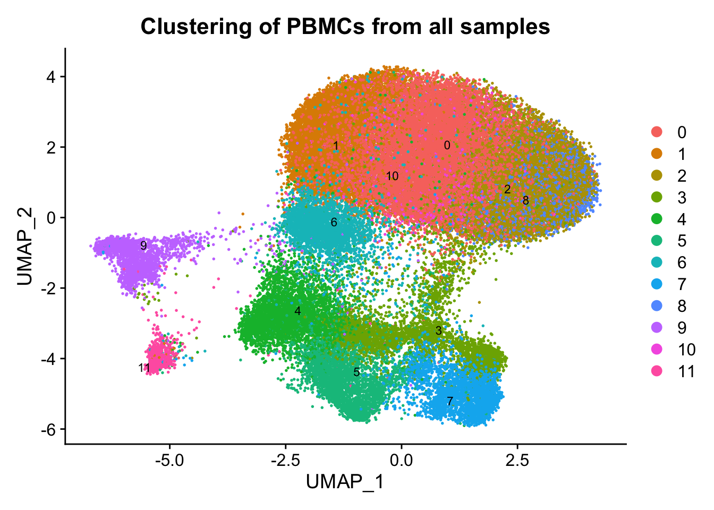
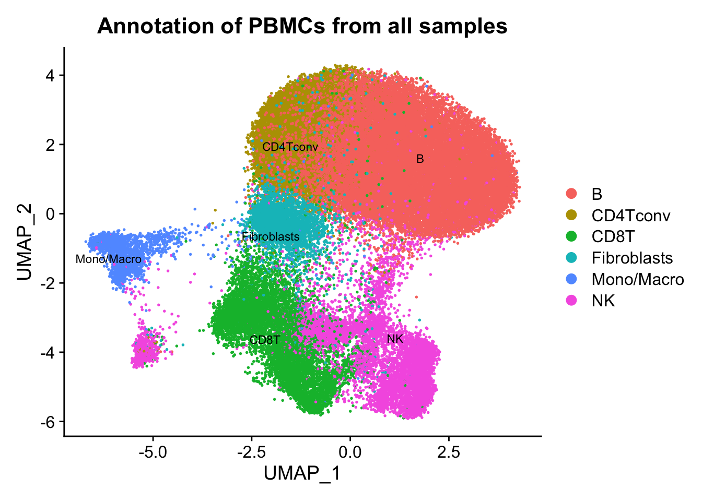
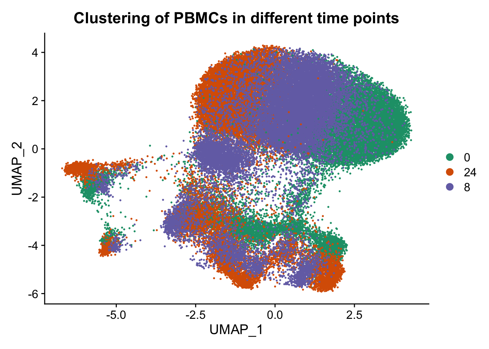
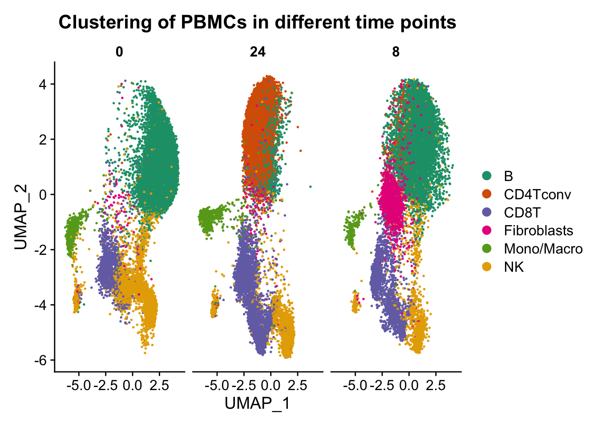

Last updated: 2021-06-15
Checks: 7 0
Knit directory: MAESTRO_documentation/
This reproducible R Markdown analysis was created with workflowr (version 1.6.2). The Checks tab describes the reproducibility checks that were applied when the results were created. The Past versions tab lists the development history.
Great! Since the R Markdown file has been committed to the Git repository, you know the exact version of the code that produced these results.
Great job! The global environment was empty. Objects defined in the global environment can affect the analysis in your R Markdown file in unknown ways. For reproduciblity it’s best to always run the code in an empty environment.
The command set.seed(20201223) was run prior to running the code in the R Markdown file. Setting a seed ensures that any results that rely on randomness, e.g. subsampling or permutations, are reproducible.
Great job! Recording the operating system, R version, and package versions is critical for reproducibility.
Nice! There were no cached chunks for this analysis, so you can be confident that you successfully produced the results during this run.
Great job! Using relative paths to the files within your workflowr project makes it easier to run your code on other machines.
Great! You are using Git for version control. Tracking code development and connecting the code version to the results is critical for reproducibility.
The results in this page were generated with repository version 08d1d91. See the Past versions tab to see a history of the changes made to the R Markdown and HTML files.
Note that you need to be careful to ensure that all relevant files for the analysis have been committed to Git prior to generating the results (you can use wflow_publish or wflow_git_commit). workflowr only checks the R Markdown file, but you know if there are other scripts or data files that it depends on. Below is the status of the Git repository when the results were generated:
Ignored files:
Ignored: .DS_Store
Ignored: .RData
Ignored: .Rhistory
Ignored: .Rproj.user/
Ignored: data/.DS_Store
Untracked files:
Untracked: .RDataTmp
Untracked: MAESTRO_documentation.Rproj
Untracked: atac_pbmc_500_nextgem_DiffPeaks.tsv
Untracked: atac_pbmc_500_nextgem_cluster.png
Untracked: code/Basic_Operations.R
Untracked: code/Downstream Analysis.R
Untracked: data/fast-scatac/
Untracked: data/scatac/
Untracked: data/scrna/
Untracked: pbmc_1k_v3.lisa/
Unstaged changes:
Deleted: MultiSample_scATACseq.Rproj
Deleted: analysis/fast-scatac.Rmd
Deleted: analysis/fast-scatac_stepbystep.Rmd
Note that any generated files, e.g. HTML, png, CSS, etc., are not included in this status report because it is ok for generated content to have uncommitted changes.
There are no past versions. Publish this analysis with wflow_publish() to start tracking its development.
Custom analysis can be conducted using either MAESTRO or Seurat package. In this study, benchmarking experiments were designed to systematically test the effect of varying processing times on single-cell transcriptome and epigenome profiles from healthy and diseased donors. Peripheral blood mononuclear cells (PBMC) were isolated from healthy donors and from patients affected with chronic lymphocytic leukemia (CLL). Samples were either preserved immediately (0 h) or after 8 and 24 h.
Goal: Evaluating the effect of sampling time on scATAC-seq chromatin accessibility profiles.
library(Seurat)Attaching SeuratObjectlibrary(tidyr)
library(ggplot2)
library(dplyr)
Attaching package: 'dplyr'The following objects are masked from 'package:stats':
filter, lagThe following objects are masked from 'package:base':
intersect, setdiff, setequal, unionlibrary(RColorBrewer)
library(presto)Loading required package: RcppLoading required package: data.table
Attaching package: 'data.table'The following objects are masked from 'package:dplyr':
between, first, lastall_samples_scATAC_Object <- readRDS("./data/fast-scatac/all_samples_scATAC_Object.rds")
ATAC <- all_samples_scATAC_Object$ATAC
ATACAn object of class Seurat
113906 features across 33524 samples within 2 assays
Active assay: ACTIVITY (28307 features, 2000 variable features)
1 other assay present: ATAC
2 dimensional reductions calculated: lsi, umapDefaultAssay(ATAC) <- 'ATAC'
ATAC[['ATAC']]Assay data with 85599 features for 33524 cells
Top 10 variable features:
chr10-100006259-100006623, chr10-100009280-100010049,
chr10-100014006-100014691, chr10-100020280-100021766,
chr10-100045939-100046452, chr10-100185069-100186626,
chr10-100228783-100229861, chr10-100267027-100268102,
chr10-100286003-100287106, chr10-100326803-100327421 df <- as.data.frame(do.call(rbind, strsplit(row.names(ATAC@meta.data), '@')))
ATAC@meta.data[,c("sample", "hours", "cell")] <- df %>% separate(V1,into = c("sample", "hours"),
sep = "(?<=[A-Za-z])(?=[0-9])")
head(ATAC@meta.data) orig.ident nCount_ATAC nFeature_ATAC ATAC_snn_res.0.6
CLL0@AAACGAAAGACAACGC all_samples 868 868 0
CLL0@AAACGAAAGGATTTGA all_samples 1122 1122 0
CLL0@AAACGAAAGTCCCGCA all_samples 589 589 0
CLL0@AAACGAAAGTGGGACT all_samples 1420 1420 0
CLL0@AAACGAACAACGCAAG all_samples 1233 1233 0
CLL0@AAACGAACAAGTTCGT all_samples 660 660 0
seurat_clusters nCount_ACTIVITY nFeature_ACTIVITY
CLL0@AAACGAAAGACAACGC 0 719.4433 2327
CLL0@AAACGAAAGGATTTGA 0 1020.8120 3066
CLL0@AAACGAAAGTCCCGCA 0 465.5627 1754
CLL0@AAACGAAAGTGGGACT 0 1102.2685 3847
CLL0@AAACGAACAACGCAAG 0 987.4834 3304
CLL0@AAACGAACAAGTTCGT 0 517.8309 1754
assign.ident assign.score assign.celltype sample hours
CLL0@AAACGAAAGACAACGC B 1.182212 B CLL 0
CLL0@AAACGAAAGGATTTGA B 1.182212 B CLL 0
CLL0@AAACGAAAGTCCCGCA B 1.182212 B CLL 0
CLL0@AAACGAAAGTGGGACT B 1.182212 B CLL 0
CLL0@AAACGAACAACGCAAG B 1.182212 B CLL 0
CLL0@AAACGAACAAGTTCGT B 1.182212 B CLL 0
cell
CLL0@AAACGAAAGACAACGC AAACGAAAGACAACGC
CLL0@AAACGAAAGGATTTGA AAACGAAAGGATTTGA
CLL0@AAACGAAAGTCCCGCA AAACGAAAGTCCCGCA
CLL0@AAACGAAAGTGGGACT AAACGAAAGTGGGACT
CLL0@AAACGAACAACGCAAG AAACGAACAACGCAAG
CLL0@AAACGAACAAGTTCGT AAACGAACAAGTTCGTp1 <-DimPlot(ATAC, label = TRUE, reduction = "umap", group.by = "seurat_clusters", repel=T, pt.size = 0.5, label.size = 3) + labs(title = "Clustering of PBMCs from all samples")
p2 <- DimPlot(ATAC, label = TRUE, reduction = "umap", group.by = "assign.ident", repel=T, pt.size = 0.5, label.size = 3) + labs(title = "Annotaion of PBMCs from all samples")
p3 <- DimPlot(ATAC, label = FALSE, reduction = "umap", group.by = "hours", repel=T, pt.size = 0.5, label.size = 2.5, cols = brewer.pal(3,"Set2")) + labs(title = "Clustering of PBMCs in different time points")
p4 <- DimPlot(ATAC, label = FALSE, reduction = "umap", group.by = "sample", repel=T, pt.size = 0.5, label.size = 2.5, cols = brewer.pal(3,"Pastel2")) + labs(title = "Clustering of PBMCs for treatment and control")
p1
p2
p3
p4
Conclusion: From the above figures, we can easily observe similar results as described in the paper. A remarkable effect of the sampling time on single-cell epigenome profiles are lying across all blood cell subtypes from healthy donors and CLL patient samples.
Between Clusters
da_peaks_C <- wilcoxauc(ATAC, 'seurat_clusters', seurat_assay = 'ATAC', assay = 'data')
##Use the 'data slots' under 'ATAC' peak assay
head(da_peaks_C) feature group avgExpr logFC statistic auc
1 chr10-100006259-100006623 0 0.01227851 0.003487763 85479610 0.5006547
2 chr10-100009280-100010049 0 0.03335661 -0.010454055 84840896 0.4969138
3 chr10-100014006-100014691 0 0.25120048 0.185560191 92218850 0.5401265
4 chr10-100020280-100021766 0 0.14339910 0.097291209 89076448 0.5217215
5 chr10-100045939-100046452 0 0.02983188 0.014214105 85905865 0.5031513
6 chr10-100185069-100186626 0 0.07909823 -0.014968209 84443356 0.4945854
pval padj pct_in pct_out
1 1.487466e-01 1.724858e-01 0.526904 0.3961704
2 1.485060e-03 2.474300e-03 1.452978 2.0762261
3 6.564270e-191 7.023687e-187 10.554048 2.4063681
4 3.959014e-85 6.916074e-83 6.147214 1.7607571
5 4.191537e-07 1.135524e-06 1.309277 0.6786251
6 1.324840e-04 2.622020e-04 3.353026 4.4789259Between Samples
da_peaks_S <- wilcoxauc(ATAC, 'sample', seurat_assay = 'ATAC', assay = 'data')
head(da_peaks_S) feature group avgExpr logFC statistic auc
1 chr10-100006259-100006623 CLL 0.01126072 0.003571778 140484070 0.5001718
2 chr10-100009280-100010049 CLL 0.03416337 -0.015113507 138680874 0.4937518
3 chr10-100014006-100014691 CLL 0.19718990 0.190303264 150660274 0.5364026
4 chr10-100020280-100021766 CLL 0.11865609 0.106800907 146114479 0.5202180
5 chr10-100045939-100046452 CLL 0.02351712 0.010300266 140824418 0.5013836
6 chr10-100185069-100186626 CLL 0.06919982 -0.043351644 136192198 0.4848913
pval padj pct_in pct_out
1 6.269437e-01 6.398073e-01 0.4375038 0.4042890
2 1.568061e-16 3.909260e-16 1.3125114 2.5839339
3 1.002517e-257 7.211300e-255 7.6259343 0.3632742
4 1.667918e-120 8.344366e-119 4.6302485 0.6035038
5 4.379813e-03 4.925931e-03 0.9357720 0.6620964
6 1.375562e-42 8.829240e-42 2.6797108 5.8006680Between Sampling Time
da_peaks_S <- wilcoxauc(ATAC, 'hours', seurat_assay = 'ATAC', assay = 'data')
head(da_peaks_S) feature group avgExpr logFC statistic auc
1 chr10-100006259-100006623 0 0.008575977 -0.001400650 132505746 0.4996974
2 chr10-100009280-100010049 0 0.038944731 -0.004709297 132194910 0.4985252
3 chr10-100014006-100014691 0 0.132731773 0.052421468 135989911 0.5128367
4 chr10-100020280-100021766 0 0.078521646 0.023018124 134239516 0.5062357
5 chr10-100045939-100046452 0 0.022193322 0.006337562 132956986 0.5013991
6 chr10-100185069-100186626 0 0.092887911 0.002615598 132532192 0.4997971
pval padj pct_in pct_out
1 4.056026e-01 5.101935e-01 0.3831717 0.4436728
2 5.844202e-02 1.051382e-01 1.7751017 2.0736883
3 7.071694e-32 1.277679e-28 5.5677197 2.9176312
4 2.651505e-12 9.719620e-11 3.3703472 2.0929784
5 5.115071e-03 1.312642e-02 0.9696591 0.6896219
6 8.583799e-01 8.975869e-01 4.2305286 4.2920525
sessionInfo()R version 4.0.5 (2021-03-31)
Platform: x86_64-apple-darwin17.0 (64-bit)
Running under: macOS Big Sur 10.16
Matrix products: default
BLAS: /Library/Frameworks/R.framework/Versions/4.0/Resources/lib/libRblas.dylib
LAPACK: /Library/Frameworks/R.framework/Versions/4.0/Resources/lib/libRlapack.dylib
locale:
[1] en_US.UTF-8/en_US.UTF-8/en_US.UTF-8/C/en_US.UTF-8/en_US.UTF-8
attached base packages:
[1] stats graphics grDevices utils datasets methods base
other attached packages:
[1] presto_1.0.0 data.table_1.14.0 Rcpp_1.0.6 RColorBrewer_1.1-2
[5] dplyr_1.0.5 ggplot2_3.3.3 tidyr_1.1.3 SeuratObject_4.0.0
[9] Seurat_4.0.1 workflowr_1.6.2
loaded via a namespace (and not attached):
[1] Rtsne_0.15 colorspace_2.0-0 deldir_0.2-10
[4] ellipsis_0.3.1 ggridges_0.5.3 rprojroot_2.0.2
[7] fs_1.5.0 spatstat.data_2.1-0 farver_2.1.0
[10] leiden_0.3.7 listenv_0.8.0 ggrepel_0.9.1
[13] fansi_0.4.2 codetools_0.2-18 splines_4.0.5
[16] knitr_1.33 polyclip_1.10-0 jsonlite_1.7.2
[19] ica_1.0-2 cluster_2.1.2 png_0.1-7
[22] uwot_0.1.10 shiny_1.6.0 sctransform_0.3.2
[25] spatstat.sparse_2.0-0 compiler_4.0.5 httr_1.4.2
[28] assertthat_0.2.1 Matrix_1.3-2 fastmap_1.1.0
[31] lazyeval_0.2.2 later_1.2.0 htmltools_0.5.1.1
[34] tools_4.0.5 igraph_1.2.6 gtable_0.3.0
[37] glue_1.4.2 RANN_2.6.1 reshape2_1.4.4
[40] scattermore_0.7 jquerylib_0.1.4 vctrs_0.3.7
[43] nlme_3.1-152 lmtest_0.9-38 xfun_0.22
[46] stringr_1.4.0 globals_0.14.0 mime_0.10
[49] miniUI_0.1.1.1 lifecycle_1.0.0 irlba_2.3.3
[52] goftest_1.2-2 future_1.21.0 MASS_7.3-53.1
[55] zoo_1.8-9 scales_1.1.1 spatstat.core_2.1-2
[58] promises_1.2.0.1 spatstat.utils_2.1-0 parallel_4.0.5
[61] yaml_2.2.1 reticulate_1.19 pbapply_1.4-3
[64] gridExtra_2.3 sass_0.3.1 rpart_4.1-15
[67] stringi_1.5.3 highr_0.9 rlang_0.4.10
[70] pkgconfig_2.0.3 matrixStats_0.58.0 evaluate_0.14
[73] lattice_0.20-41 ROCR_1.0-11 purrr_0.3.4
[76] tensor_1.5 labeling_0.4.2 patchwork_1.1.1
[79] htmlwidgets_1.5.3 cowplot_1.1.1 tidyselect_1.1.0
[82] parallelly_1.24.0 RcppAnnoy_0.0.18 plyr_1.8.6
[85] magrittr_2.0.1 R6_2.5.0 generics_0.1.0
[88] DBI_1.1.1 withr_2.4.2 pillar_1.6.0
[91] mgcv_1.8-35 fitdistrplus_1.1-3 survival_3.2-10
[94] abind_1.4-5 tibble_3.1.1 future.apply_1.7.0
[97] crayon_1.4.1 KernSmooth_2.23-18 utf8_1.2.1
[100] spatstat.geom_2.1-0 plotly_4.9.3 rmarkdown_2.7
[103] grid_4.0.5 git2r_0.28.0 digest_0.6.27
[106] xtable_1.8-4 httpuv_1.6.0 munsell_0.5.0
[109] viridisLite_0.4.0 bslib_0.2.4